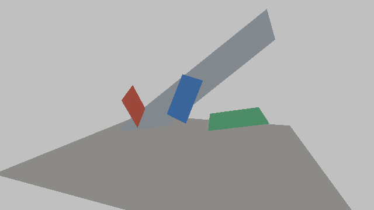
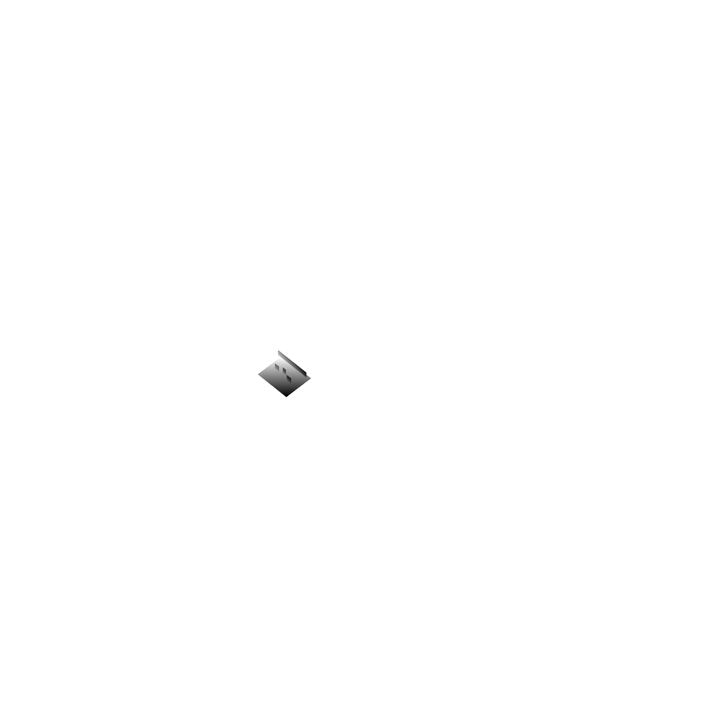

suite: shadows generated: 2026-07-08T11:43:06Z
| Target | Status | Preview | Diff |
|---|---|---|---|
| final_color | captured capture_written |  | |
| shadow_preview | captured capture_written | ||
| shadow_cascade_0 | captured capture_written |  |
| ID | Type | Status | Request | Result | Values | Assertions |
|---|---|---|---|---|---|---|
| shadow_probe_center | shadowInspect | pass readout_resolved | 12 | 13 | cascadeBlendFactor=0, cascadeIndex=0, receiverCompareDepth=0.352692, receiverDepth=0.354342, sampledDepth=0.356466, valid=1 | shadow_probe_valid_value: pass 1 |
| ID | Metric | Status | Actual |
|---|---|---|---|
| shadow_cascades_present | renderer.shadow.cascades | pass passed | 3 |